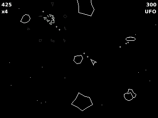
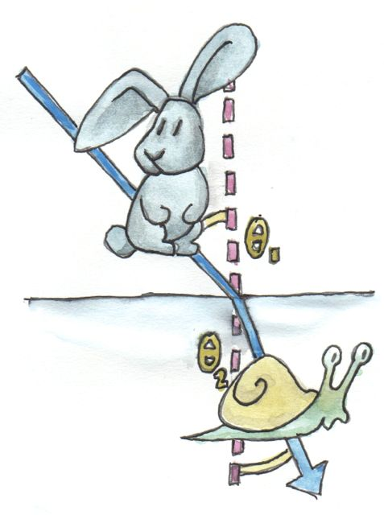
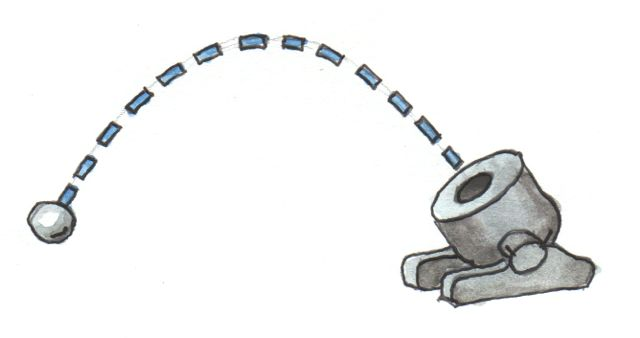
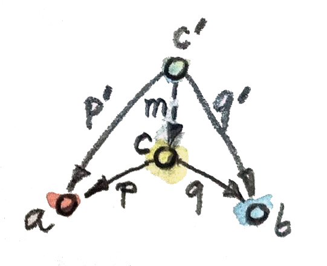

本书第一部分中，我主张范畴论与编程都关乎可组合性。编程时，你不断分解问题，直到抵达自己能处理的细节层级，依次解决各个子问题，再自底向上重新组合答案。粗略说，有两种做法：告诉计算机要做什么，或者告诉它怎样做。前者称为声明式（declarative），后者称为命令式（imperative）。
即使在最基础的层面也能看到差别。复合本身可以声明式定义：h 是 f 后接 g 的复合：
h = g . f也可以命令式定义：先调用 f，记住结果，再以结果调用 g：
h x = let y = f x
in g y程序的命令式版本通常描述为按时间排序的一系列动作。尤其是，g 必须等 f 执行完成后才能调用。至少概念图景如此；在采用按需调用（call-by-need）传参的惰性语言中，实际执行可能不同。
事实上，根据编译器的聪明程度，声明式与命令式代码的执行方式可能几乎没有区别。但两种方法在解决问题的思路，以及结果代码的可维护性、可测试性方面，可能存在巨大差异。
主要问题是：面对一个问题，我们是否总能在声明式与命令式解法之间选择？若有声明式解法，它是否总能翻译成计算机代码？答案远非显然；若能找到答案，很可能会彻底改变我们对宇宙的理解。
下面详细说明。物理学中也存在类似二元性，它要么指向某项深层原理，要么揭示我们的思维方式。Richard Feynman 曾说，这种二元性启发了他的量子电动力学工作。
多数物理定律有两种表达形式。一种采用局部或无穷小视角：观察系统在一个很小邻域内的状态，预测它在下一瞬间怎样演化。这通常用微分方程表达，再对一段时间积分或求和。
这种方式与命令式思维很像：沿一系列小步骤得到最终解，每一步依赖上一步结果。物理系统的计算机模拟通常把微分方程改成差分方程再迭代。Asteroids 游戏中的飞船动画就是这样实现的：每个时间步，把速度乘以时间增量，算出位置的小增量；速度又增加一个与加速度成比例的小量，而加速度等于力除以质量。

这些是牛顿运动定律对应微分方程的直接编码：
v = dx/dt
类似方法可用于更复杂的问题，例如用 Maxwell 方程模拟电磁场传播，乃至用格点 QCD（量子色动力学）模拟质子内部夸克与胶子的行为。
数字计算机鼓励局部思维以及空间、时间离散化；其极端体现，是 Stephen Wolfram 英勇地尝试把整个宇宙的复杂性还原成元胞自动机系统。
另一种方法是全局的。观察系统初态与终态，通过最小化某个泛函，计算连接二者的轨迹。最简单的例子是 Fermat 最短时间原理：光线沿飞行时间最短的路径传播。没有反射或折射物体时，从 A 到 B 的光线走最短路径，即直线。但光在水或玻璃等致密透明材料中传播较慢。若起点在空气中、终点在水下，光在空气中多走一些、在水中抄近路更有利。最短时间路径使光线在空气与水的边界折射，得到 Snell 折射定律：
其中 v₁ 是光在空气中的速度，v₂ 是光在水中的速度。

全部经典力学都能从最小作用量原理推导。任意轨迹的作用量可通过拉格朗日量积分计算；拉格朗日量是动能与势能之差（注意是差，不是和；和才是总能量）。发射迫击炮命中给定目标时，炮弹先上升到重力势能较高处，并在那里停留一段时间，为作用量积累负贡献。它在抛物线顶端附近还会减速，以减小动能；随后加速，迅速穿过低势能区域。

Feynman 最伟大的贡献，是认识到最小作用量原理可推广到量子力学。问题同样以初态、终态表述，再用二者之间的 Feynman 路径积分计算跃迁概率。
要点是：物理定律的描述方式存在一种奇特而尚未解释的二元性。可以采用局部图景，让事情按顺序、以小增量发生；也可以采用全局图景，只声明初始与最终条件，中间的一切自然随之确定。
全局方法也用于编程，例如实现光线追踪。我们声明眼睛与光源的位置，再找出连接它们的光线路径。虽然不显式最小化每条光线的飞行时间，却用 Snell 定律与反射几何达成同样效果。
局部与全局方法最大的差别，在于怎样处理空间，尤其是时间。局部方法拥抱此时此地的即时满足；全局方法采取长期、静态的视角，仿佛未来早已注定，而我们只是分析某个永恒宇宙的性质。
没有什么比函数式响应式编程（Functional Reactive Programming，FRP）处理用户交互的方式更能说明这一点。FRP 不为每种用户动作编写可访问共享可变状态的独立处理器，而把外部事件视为无限列表，再对其应用一系列变换。概念上，我们未来全部动作的列表已经存在，可作为程序输入。对程序而言，π 的数字列表、伪随机数列表和来自硬件的鼠标位置列表没有差别。无论哪一种，要取得第 n 项，都必须先经过前 n−1 项。用于时间事件时，这项性质称为因果性（causality）。
这与范畴论有什么关系？我将主张：范畴论鼓励全局方法，因此支持声明式编程。首先，与微积分不同，它没有内建的距离、邻域或时间概念；只有抽象对象与抽象连接。若能通过一系列步骤从 A 到 B，也能一步抵达。更重要的是，范畴论的主要工具泛构造，正是全局方法的典范。我们已经在范畴积的定义中见过：通过声明性质来定义它，这是非常声明式的方式。它是带有两个投影的对象，并且是其中最好的对象——它优化某项性质：对其他同类对象的投影进行因子分解。

把它与 Fermat 最短时间原理或最小作用量原理比较。
反过来，再与更命令式的传统笛卡尔积定义比较：从一个集合选一个元素，从另一个集合选一个元素，据此说明怎样创建积的元素。这是创建 pair 的配方，另外还有拆解 pair 的配方。
几乎所有编程语言——包括 Haskell 这样的函数式语言——都把积类型、余积类型、函数类型内建起来，而非通过泛构造定义；不过确实有人尝试创建范畴式编程语言，例如 Tatsuya Hagino 的论文。
无论是否直接使用，范畴定义都会为已有编程构造提供正当性，也会产生新的构造。最重要的是，范畴论提供了一种元语言，让我们在声明式层面推理计算机程序；它还鼓励先推理问题规格，再把规格落实成代码。